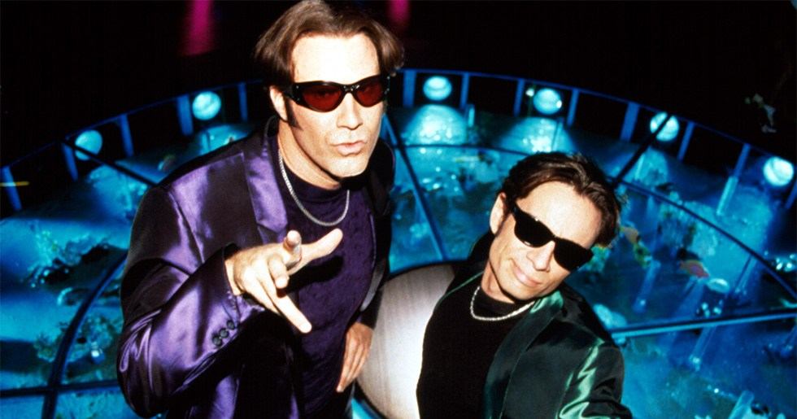

90-talet
Det som starkt förknippas med 90-talet, är dock glad pop, eurodance och techno. Det var dock inte bara dessa genrerna som spelades, även grunge var en populär musikstil.
En annan nyhet som slog ner i musikmarknaden med ett brak var pojkband. Detta fenomen såg ingen komma men helt plötsligt fanns det sjungande pojkgrupper över hela världen. USA och Europa spottade ur sig mängder av pojkband som alla visste hur de skulle trollbinda unga tjejers hjärtan.
Den största gruppen under 90-talet var Nirvana och de släppte en del stora låtar ex. "Smells Like Teen Spirit", "In Bloom" och "Come As You Are"
